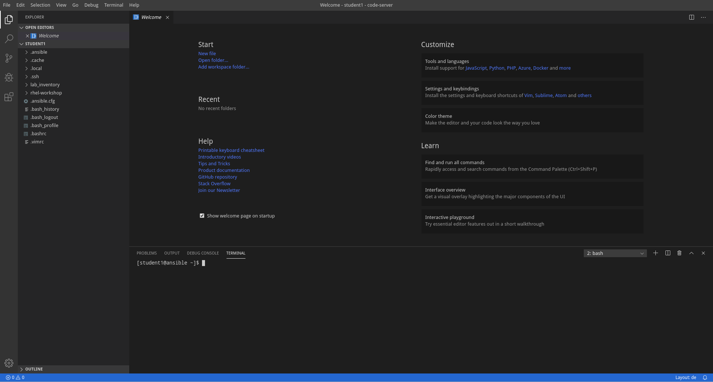

Introduction
This chapter will introduce you to your lab environment and introdoce you to the importance of Ansible Collections, what they are and where existing collections can be found and consumed.
Your Lab Environment
In this lab you work in a pre-configured lab environment. You will have access to the following hosts:
| Role | URL for External Access (if applicable) | Hostname Internal |
|---|---|---|
| Ansible Tower | student<N>.<LABID>.open.redhat.com | ansible-1 |
| Visual Code Web UI | student<N>-code.<LABID>.open.redhat.com | |
| Managed RHEL8 Host 1 | node1 | |
| Managed RHEL8 Host 2 | node2 | |
| Managed RHEL8 Host 2 | node2 |
The lab environments in this session have a <LABID> and are separated by numbered student<N> accounts. Follow the instructions given by the lab facilitators to receive the values for student<N> and <LABID>!
On the lab landing page you’ll find the URLs you need to access complete with student number and lab ID already filled in.
Accessing your Lab Environment
Your main points of contact with the lab is code-server, providing a VSCode-experience in your browser.
Now open code-server using the VS Code access link from the lab landing page or use this link in your browser by replacing <N> by your student number and the <LABID>:
https://student<N>-code.<LABID>.open.redhat.com

Use the password provided on the lab landing page to login into the code-server web UI, you can close the Welcome tab. Now open a new terminal by heading to the menu item Terminal at the top of the page and select New Terminal. A new section will appear in the lower half of the screen and you will be greeted with a prompt:

If unsure how to use code-server, read the Visual Studio Code Server introduction, to learn more about how to create and edit files, and to work with the Terminal.
Congrats, you now have a shell terminal on your Ansible control node. From here you run commands or access the other hosts in your lab environment if the lab task requires it.
Now in the terminal become root:
[ansible-1 ~]$ sudo -i
Most prerequisite tasks have already been done for you:
-
Ansible software is installed
-
sudohas been configured on the managed hosts to run commands that require root privileges.
Check Ansible has been installed correctly (your actual Ansible version might differ):
[ansible-1 ~]# ansible --version
ansible 2.9.6
[...]
Log out of the root account again:
[ansible-1 ~]# exit
logout
In all subsequent exercises you should work as the student<N> user on the control node if not explicitly told differently.
What are Collections and why should I care?
Ansible Collections are a new distribution format for Ansible content that can include playbooks, roles, modules, and plugins. Modules are moved from the core Ansible repository into collections living in repositories outside of the core repository. This change in the content delivery process will allow Ansible to keep up the tremendous success and, coming with it, growth in content.
- Before collections, module creators had to wait for their modules to be included in an upcoming Ansible release or had to add them to roles, which made consumption and management more difficult.
- By distributing modules packaged in Ansible Content Collections along with roles, documentation and even Playbooks, content creators are now able to move as fast or conservative as the technology they manage demands.
Example: A public cloud provider could make new functionality of an existing service available, that could be rolled out along with the ability to automate the new functionality with Ansible.
For Ansible users, the benefit is that updated content can continuously be made available. Managing content this way also becomes easier as modules, plugins, roles, and docs that belong together are packaged together and versioned.
Understand Collections Lookup
Ansible Collections use a simple method to define collection namespaces. Anyway, if
your playbook loads collections using the collections key and one or more roles, then
the roles will not inherit the collections set by the playbook.
This leads to the main topic of this exercise: roles have an independent collection loading method based on the role’s metadata. To control collections search for the tasks inside the role, users can choose between two approaches:
-
Approach 1: Pass a list of collections in the
collectionsfield inside themeta/main.ymlfile within the role. This will ensure that the collections list searched by the role will have higher priority than the collections list in the playbook. Ansible will use the collections list defined inside the role even if the playbook that calls the role defines different collections in a separatecollectionskeyword entry.# myrole/meta/main.yml collections: - my_namespace.first_collection - my_namespace.second_collection - other_namespace.other_collection -
Approach 2: Use the collection fully qualified collection name (FQCN) directly from a task in the role. In this way the collection will always be called with its unique FQCN, and override any other lookup in the playbook
- name: Create an EC2 instance using collection by FQCN amazon.aws.ec2: key_name: mykey instance_type: t2.micro image: ami-123456 wait: yes group: webserver count: 3 vpc_subnet_id: subnet-29e63245 assign_public_ip: yes
Roles defined within a collection always implicitly search their own collection
first, so there is no need to use the collections keyword in the role metadata to access modules, plugins, or other roles.